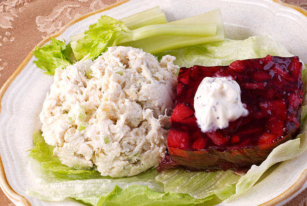

Hot Dog Jello Salad
This traditional party dish is sure to win over the most picky of guests!
Ingredients:
- 2 cups boiling water
- 1 package (6 oz) lemon-flavored gelatin
- 1 1/2 cups cold water
- 1/2 cup mayonnaise
- 1/2 cup sour cream
- 1/4 cup finely chopped dill pickles
- 1/4 cup finely chopped red onion
- 4 hot dogs, cooked and chopped into small pieces
- 1/4 cup chopped fresh parsley (optional)
- Salt and pepper, to taste
Instructions:
- In a large bowl, dissolve the lemon-flavored gelatin in 2 cups of boiling water, stirring until fully dissolved.
- Add 1 1/2 cups of cold water to the dissolved gelatin, and let it cool slightly.
- In a separate bowl, mix together the mayonnaise and sour cream until well combined.
- Gradually whisk the mayonnaise and sour cream mixture into the cooled gelatin until smooth.
- Fold in the chopped dill pickles, red onion, and cooked hot dog pieces.
- Season the mixture with salt and pepper to taste, and add the chopped fresh parsley if desired.
- Pour the mixture into a 6-cup mold or divide it among individual serving dishes. Cover and refrigerate for at least 4 hours, or until the gelatin is fully set.
- To serve, carefully unmold the Hot Dog Jello Salad onto a serving plate. If needed, dip the mold briefly into warm water to loosen the gelatin before inverting it onto the plate.
- Serve the Hot Dog Jello Salad as a unique appetizer or side dish at your next gathering.